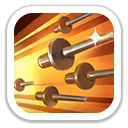
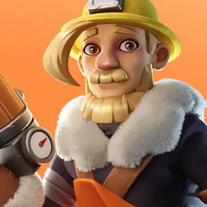
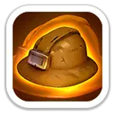
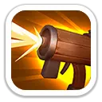
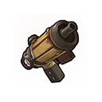
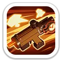

Дождь из гвоздей
Активный навыкЗинман выпускает по цели поток гвоздей. Каждый удар наносит урон от его атаки и оглушает цель на 2 секунды.
Ур. 1–5: 55% / 60% / 65% / 70% / 75% атаки

Архитектор, инженер и герой развития города
Зинман — мифический стрелок 1-го поколения, чья главная сила находится не на поле боя, а в развитии города. Его ключевой навык снижает расход базовых ресурсов на строительство и одновременно ускоряет улучшение зданий. В бою он даёт защитные бонусы и смертоносность, но с появлением новых поколений быстро уступает специализированным боевым героям.
Максимальные показатели героя без учёта внешних усилений.
Работают в боях героев, включая Освоение и Арену.

Зинман выпускает по цели поток гвоздей. Каждый удар наносит урон от его атаки и оглушает цель на 2 секунды.
Ур. 1–5: 55% / 60% / 65% / 70% / 75% атаки
Когда здоровье Зинмана падает ниже 50%, его защита резко возрастает.
Ур. 1–5: +50% / +75% / +100% / +125% / +150% защиты
Увеличивает скорость атаки Зинмана, повышая частоту его обычных атак.
Ур. 1–5: +10% / +15% / +20% / +25% / +30%
Влияют на войска и развитие города.

Повышает защиту и здоровье всех войск в отряде.
Ур. 1–5: +2% / +4% / +6% / +8% / +10% к защите и здоровью
Снижает расход базовых ресурсов на строительство и одновременно повышает скорость улучшения зданий. Базовые ресурсы: мясо, древесина, уголь и железо.
Ур. 1–5: −3 / −6 / −9 / −12 / −15% ресурсов и +3 / +6 / +9 / +12 / +15% скорости

Повышает смертоносность всех войск. В старых источниках встречается формулировка об увеличении наносимого урона, но актуальные базы указывают именно смертоносность.
Ур. 1–5: +5% / +10% / +15% / +20% / +25% смертоносности

Дятел
Эксклюзивное снаряжение Зинмана. На максимальном уровне усиливает героя и стрелков, а также открывает два специальных эффекта.

Лучшее применение. Экономия базовых ресурсов и ускорение улучшений работают на развитие города.
На старте сервера полезны оглушение, скорость атаки и резкий рост защиты при низком здоровье.
В ранней игре может закрыть слот стрелка, но по мере появления новых поколений быстро уступает боевым героям.
Не является приоритетным героем: его первый навык Экспедиции даёт выживаемость, а не урон.
Зинман необычен тем, что может оставаться полезным даже тогда, когда давно выпал из боевого состава. Если вы получили его рано, прокачка «Мастера бастионов» окупается экономией ресурсов и времени. Но вкладывать редкие материалы и эксклюзивные виджеты только ради PvP обычно невыгодно: новые поколения стрелков дадут намного больше боевой силы.
Данные сверены по нескольким актуальным базам и гайдам. При расхождении старых и новых формулировок приоритет отдан свежим данным 2026 года.